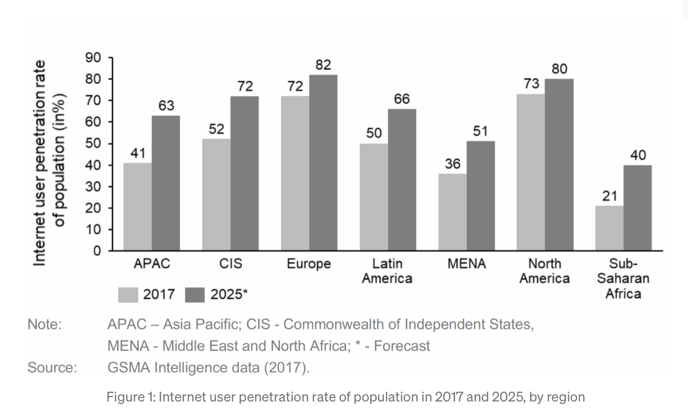
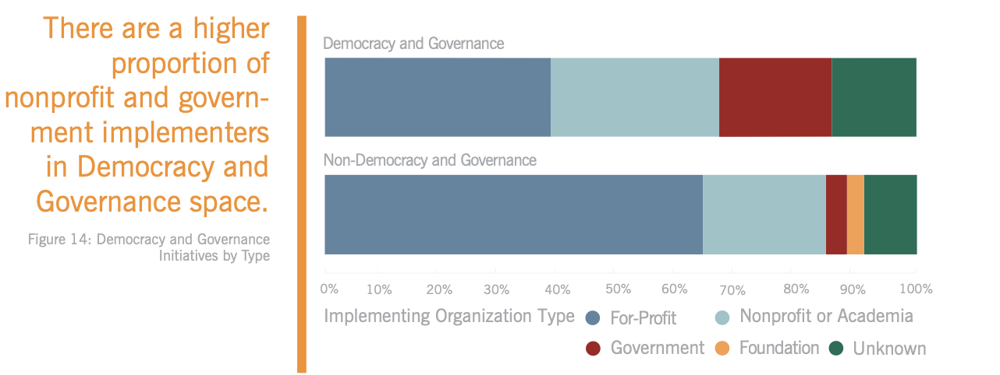
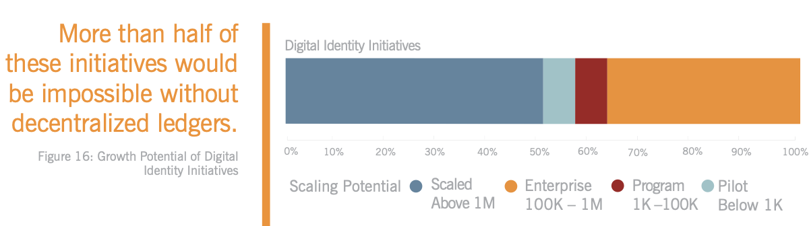
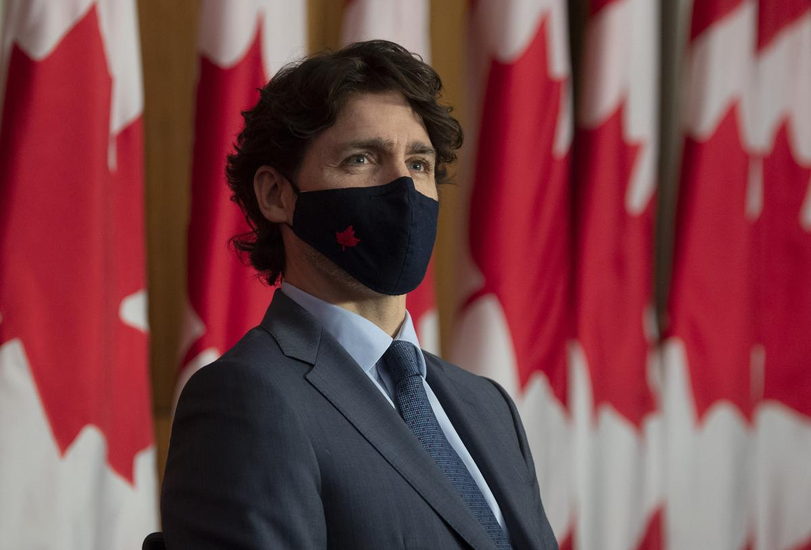
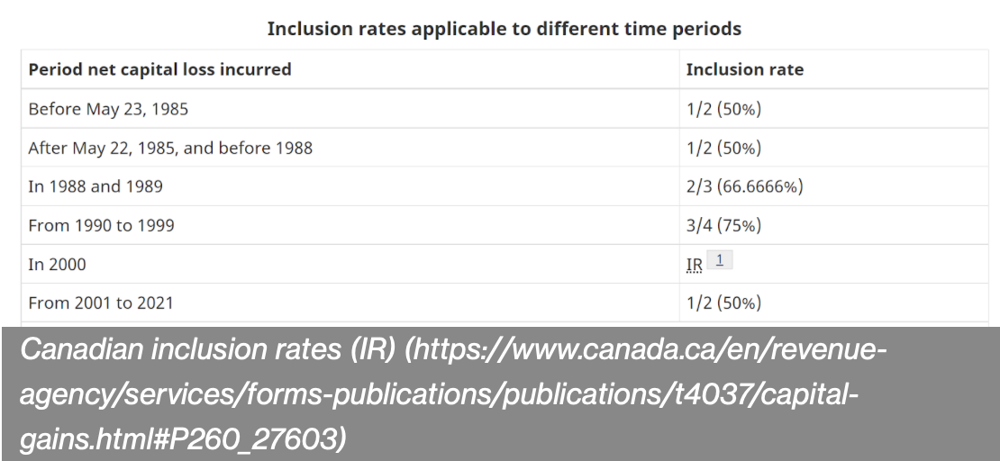

Cryptocurrencies and Human Rights Impact of Cryptocurrency on Developing Nations
Poverty in developing nations is mainly driven by economic factors, which include limited access to financial services and high inflation rights. Moreover, studies have argued that a low level of trust and corrupt government institutions harm the economic development.
Cryptocurrencies could provide a significant benefit by overcoming the lack of social trust and by increasing the access to financial services as they can be considered as a medium to support the growth process in developing countries. Many students have proven that financial inclusion is essential for the development of a country. For example, in Nakamoto's study, poverty is linked to access to financial services, which there is limited access becoming a whole new problem itself. In theory, financial services help because they provide people with the opportunity to protect themselves against the situation of financial storage.
Challenges and Opportunities for Develping Countries through Crypto
In developing nations, financial intermediaries can be forced to a suboptimal behaviour if financial frictions are severe. This is due to the possible detrminental situation of the companies, when they do not have access to financial firms to obtain funding for innovating leading to competitive disadvantages. As a result, there is less of a support of the local economy since there are less jobs, salaries, and tax volume.
Another issue is the limitation of participation of worldwide trade. Typically, in order to participate in worldwide trade, a bank account with an international identification is required (i.e., SWIFT). Firms without bank accounts are excluded from a wide range of international services and are restricted in selling products outside of their region.
In terms of opportunities, the growth of technology in developing nations had increased immensely over the years. 
Internet User penetration of the total population show by region
For instance, the growth rate of the total population is especially high in areas with more developing countries like in the Sub-Saharan African region with a growth rate of over 90%. Without the cryptocurrencies, the local fiat currency must often be exchanged to more wide-spread fiat currencies like the US dollar or the Euro, and then must be converted again into the target fiat currency. However, this process can be optimized through cryptocurrencies. For example, a worked in Canada can could use a local service provider that transfers Canadian dollars to Bitcoins to transfer money to family members back home in another nation, where the family can derive Rupees at local service provider, which changes Bitcoin to Rupees quickly. If this were true, companies like Western Union and Remitly would be extinct. Micro-finance transactions are currently expensive because the borrowing and the repaying transactions fees are almost high as the payment itself.
Though, it should be mentioned that in order for cryptocurrency to be valued, it must have liquidity. For instance, to create a liquid market for Bitcoins, some start-ups have been founded, such as BitPesa in Kenya, which provide liquid markets for some specific currency corridors (i.e, direct exchange of Kenyan Shilling to US Dollar).
Cryptocurrencies can furthermore solve the problem of participation in international trade without having a bank account. Using cryptocurrencies enables such parties to sell products in exchange for digital assets, thus, avoiding traditional e-commerce systems, which often involve having to set up a merchant account with a formal bank.
Globe
Cryptocurrencies in combination with smart contracts can contribute to strengthening social trust and fight corruption restoring both second generation and third rights through a more transparent contract system. Citizens can publicly see recorded data of the cryptocurrencies in the blockchain, in which the state funds are seen. In other words, cryptography allows for access to add to the ledger securely. As previously mentioned, it is extremely difficult to change or remove data recorded on a network. Thus, with this identity, we can understand that blockchain makes it possible to reduce or eliminate integrity violations, such as fraud and corruption, while also reducing transaction costs.
General Problems that Cryptocurrency can tackle found by NGOs and IGOs
According to UNEP's DTU Partnership (a collaboration between UNEP, the Technical University of Denmark, and the Danish Ministry of Foreign Affairs), there are three main areas where blockchain can accelerate in reducing large-scale issues.
Transparency
Data on harmful greenhouse gas emissions in many countries are inaccurate. Blockchain solutions can provide a transparent and trustworthy way to show how nations are taking action to reduce their impact on the climate.
Climate Finance
Investments that contribute to slowing the rate of climate change could be boosted if carbon markets are scaled up, allowing business and industries to transition to low carbon technologies. Blockchain allows for multiple companies to put their foot into the market as they don't require an international trade license prohibiting from investing into the future.
Clean Energy Markets
As renewable sources, by the nature of blockchain technology (intermittent and decentralized), new forms of energy market are needed.
However, the huge energy consumption made by network mining processes is still very large. Many companies in the blockchain and crypto industry are working on resolving this issue. For example, The Ethereum Foundation is working on a Proof of Stake Algorithm to verify transactions that will cut down energy costs by 99.95%. Moreover, in April 2021, three important organizations (the Energy Web Foundation, Rocky Mountain Institute, and the Alliance for Innovation Regulations), formed the Crypto Climate Accord, which is supported by all organizations in the crypto industry.
Cryptocurrency's Impact on Human Rights
According to Alex Gladstein, cheif strategy officer of the Human Rights Foundation at Singularity University, there are three reasons why Bitcoin will be efficient in the future:
Permissionless
You don't need ID or a passport.
Deflationary
Prevent governments from printing more of it, and lowering the value of the asset.
Censorship Resistant
Surveillance is increasing around the world. For example, in recent protests in Hong Kong, Students realized their Octopus cards (a contactless smart card that can be used for payments) was linked to their student ID, which is linked to government officials running the school board. Cryptocurrencies like Bitcoin can make it difficult for a government to stop a transaction. It's very handy under authoritarian rule, where civilians are restricted to buy many things we consider "normal" in democratic nation-states.
A very prominent example of how cryptocurrency is affecting second and third generation rights of civilians who have been affected by high autonomous decisions is how HRF is pursuing 4 channels to help human right activists understand how Bitcoin works in order to use them to their advantage. They are being trained to conduct research so their communication tools can be better designed so they don't get tracked by governments, especially under authoritarian rule. Moreover, they are also aiming to diversify the industry by educating human rights activists from different parts of the world about how Bitcoin technology works.
The UN World Food Programme, which feeds more than 100 million people across 80 countries, has already saved millions of dollars in bank transfers. Platforms such as BitSpark and BitPesa significantly increase the efficiency of their remittances, which form a vital part of the economy in countries suffering from political instability or runaway inflation. Moreover, it's not just the UN. The IGO, Internation Union of Conservation of Nature is planning to use blockchain to reduce overhead costs, improve transparency, and enable direct donations to individual projects.
UN World Food Programme
Though despite the possible positive impacts that cryptocurrency may create, there are over 4.2 billion people that live under authoritarian regimes that use money as a tool for surveillance. Sample nations include China, North Korea, Russia, and Nigeria. In China, if you type or utter one wrong word, the Communist Party might eliminate your financial services. This in-turn impacts dissidents and creative minds negatively, since they are forced to use the country's centralized economy. Another recent example is in Nigeria. There were nationwide protests in Belarus and Nigeria that have broken out against tyranny and corruption. In both places, activists raising money to support the democratic movement had their bank accounts frozen.
For activists living under state repression, bitcoin provides a way to preserve their money in a secured cyberspace, locked away by encryption in a network that has never been hacked. Bitcoin's positive effcts have been recognized by Cuba, Nigeria, China, Pakistan, Venezuela, Russia, Turkey, Argentina, Palestine, and more, where it is helping people escape tyranny and currency collapse. A recent example is in Nigeria, where in October 2021, a feminist coalition in Nigeria raised the equivalent of tens of thousands of dollars worth of bitcoin to buy gas masks and protest equipment as activist bank accounts were being turned off.
Beyond Bitcoin, there are encrypted communication apps and browsers like Signal or privacy-preserving crpytocurrencies like Zcash . By building on, and investing in tools like these, we can ensure that our cities, social networks, and financial systems don't turn into tools of surveillance and control.
Once again, it should be remembered that Bitcoin wasn't as powerful five years ago, before it had global liquidity. Though today, exchanges have popped up in every region, where daily trading value exceeds that of Apple and other popular stocks, including peer-to-peer marketplaces such as Paxful and LocalBitcoins. These marketplaces have extended their reach in effect to support civilians of different nations fighting for their second and third-generation rights through enabling users to sell bitcoin for local currency almost anywhere in the world anonymously.
Authoritarian Rule taking Action Against Cryptocurrency
As much as decentralizing technologies have helped citizens, they have also provided mre countering force. Currency troubles market anarchists. The central banks that control the money supply are entities of state. However, cryptocurrencies attempt to provide a technological alternative to currency and banking that would avoid the central banks and individualism of uncap ideal.
For anarch-capitalism to work, it would need to break transactions entirely from the traditional monetary system and the organizations that run it. At the current state, central banks and corporations can interfere with transactions. However, the soft side of cryptocurrency, which has not been looked at too much is that the mining costs and resource consumption are reasons why centralization is still needed. For example, according to Adam Greenfield, two Chinese giants can control over hald of the global Bitcoin mining operations. If they collaborate, a majority-control of the blockchain could allow them to manipulate it. It should however be worth mentioning that this was the purpose a decentralized currency was meant to avoid, hence, going back square-one to centralization and higher authority.

Crosswalk in Japan
Moreover, the same hype driving cryptocurrency has attracted banks, governments, and corporations - something that cryptocurrency was designed to circumvent. For example, Canada has been experimenting with a blockchain-backed version of its national currency ran by the Bank of Canada (backed by the government), called CAD-Coin.
When the local or central bank manages the cryptocurrency platform, it also gets a record of every transaction that takes place in that economy.
Relative Absence of Minorities in the Blockchain Space
According to Data Shows, women are underrepresented in the Blockchain industry. Between 7-15% of people in the blockchain industry are female, and fewer are still ethnic minorities.
Another factor is the relative disadvantage of women and minorities in gaining the necessary tech skills. This is an issue where utilitarian and deontological analysis agree: by respecting the equal rights of women and minorities, the available talent pool will massively expand.
Democracy and Governance
Distributed ledger technology can address many security and even logistical practices of government data exchange.
Citizens' data is harder to incorrectly or illegally erase or edit when it's stored across blockchain-like networks, and these networks can prevent multiple agencies from having to repeatedly an individual's information.
Governments in particular have started programs to consider or adpot blockchain technologies given the technology's added security.

Diagram from Stanford University's Study on Blockchain Impacts
Another subcategory of Democracy and Governance includes citizen efforts to hold government accountable to citizen needs, including publicly curated crowdfunding for social movements (ACT Foundation) and direct democratic participation on issues through the blockchain.
It should be noted that though Bitcoin's use of blockchain allows for it to become a "trustless" currency, citizens will need reasons to trust a new framework for interaction with state-institutions: particularly on sensitive issues like voting.
For context, in the US, about 3 in 10 adults think cryptocurrency should be regulated by the federal government compared to about 1 in 5 who should not, with democrats significantly more supportive of Regulations than Republicans.
Digital Identity
The World Bank estimates that over 1.5 billion people on the planet are unable to prove their identity.
Blockchain technology has several key advantages to current solutions of delivering a digital identity. They include increased efficiency, reduction in cost, and increase in transparency and fraud. Additionally, in contrast to existing centralized identity databases, like Aadhaar in India, blockchain-based solutions allow for user-centric databases that give users complete control over who can access their data.

Diagram from Stanford University's Study on Blockchain Impacts
From Stanford's Study, the limitations of blockchain technology is not by the government, but by the technology itself and the conflict between current and blockchain technology. For example, a smart contract may allow a user to delete a message, but native messaging apps on IOS or Android may not as it is not supported through SMS messaging.
Government Officials being Banned From Trading Digital Assets
From February 18th, 2022, US federal reserve officials won't be able to trade digital assets. According to US law, these rules "aim to support public confidence in the impartiality and integrity of the Committee's work by guarding against even the appearance of any conflict of interest. "
To summarize, the government does not want it's own officials to use non-trackable assets as it goes against their own actions and visions on trying to restrict the general public of using such assets.
Canada's Views on Cryptocurrency Industry
Canadian regulatory authorities have defined digital currency as neither money or currency. In 2014, the Bank of Canada released a position paper concluding that Bitcoin and other cryptocurrencies fail to meet the definition of money. Instead, the labelled digital assets as a commodity, like oil and gold.

Justin Trudeau
The Current Act defines legal tender as two things:
1) Bank notes issues by the Bank of Canada under the Bank of Canada Act.
2) Coins issues under the Royal Canadian Mint Act
Digital currencies are not supported by any government or central authority, such as the Bank of Canada, as only the Canadian Dollar is considered official currency in Canada.
How the Government Taxes Cryptocurrency
The CRA treates Cryptocurrency like a commodity as mentioned before for the purposes of the Income Tax Act. When one uses cryptocurrency to pay for goods or services, the CRA treates it as a barter transactions for income tax purposes.
The CRA will track a user's cyptocurrency amounts when a user:
* Sells or makes a gift of cryptocurrency
* Trade or exchange cryptocurrency, including disposing of one cryptocurrency to get another
* Converting cryptocurrency to government-issued currency, such as Canadian dollars.
* Use cryptocurrency to buy goods or services.
If you are using cryptocurrency as a business, the process may be a little different. The profits you make on the disposition or sale are considered business income of selling assets. However, if the sale of cryptocurrency does not costitute carrying on a business, and the amount it sells for is more than the original purchase price, then the taxpayer has realized a capital gain. 
Binance.usd's Difficulties with Canadian Law
Binance is being banned in many nations including Canada as it is influencing unregulated entities that might be perceived as illegal by authorities. Nations including United Kingdom, Chain, and Japan have issued warnings against the exchange due to a hight-risk of money-laundering.
Canada has seen the same issue, and thus, had banned the exchange as it was seen as a threat to The Securities Act. However, it has been unbanned on December 24th, 2021, where users can traade, sell, and deposit Binance just like any other exchange except for users in Ontario.
According to The Ontario Securities Commission, Binance investors are registered under Securities Law in Ontario. Binance represented to OSC Staff that no new transactions involving Ontario residents would occur after December 31st, 2021. Binance had issued a ntoice to users without any communication to the OSC. However, the province saw Binance trying to use force through smart power to gain legitimacy to their exchange from the citizens of Ontario. They then concluded that no entity in the Binance group of companies hold any form of securities registration in Ontario.
The province has made it clear that all cryptocurrency assets and platforms that will be applying registration with securities regulators should be aware that misrepresenting their registration status can raise concerns in terms of securities.
Cryptocurrency Fueling Ottawa's Trucker's Protest?
U.S crowdfunding platform GoFundMe broke ties with the demonstrators scuttling what had quickly become one of the biggest fundraising campaigns in the company's history, with about $10 million in contributions. GoFundMe stated, "This fundraise is now in violation of our terms of service".

Truckers Protest taken from McKinney
Funding for the self-declared "Freedom Convoy" protesters is now coming through cryptocurrency exchanges and in the form of NFTs. Some protest organizers said in livestreams that they have received more than $300,000 in Bitcoin alone, but other ad-hoc leaders claimed that number is at least $500,000 USD when factoring in Dogecoin, Ethereum, and Tether Donations. In addition to crypto donations, the fundraising effort includes artwork being sold as NFTs. On OpenSea alone, hundreds of newly-minted projects being listed under "#FREEDOMCONVOY22", being sold for up to 0.1 Ethereum ($310.00 USD).
Due to the volume of cryptocurrency funding, governmental agencies have started to track financial contributions to the Ottawa Protest. Because of the taxation process introduced in Canada, Ottawa police chief Peter Sloly stated on Feburary 7th, 2022, that 20 protesters have been arrested, and charges have been made to another 500.